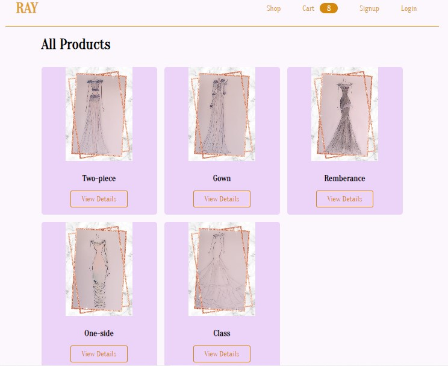

Welcome to my webpage
"Hi, my name is Evelyn and I'm a Full Stack Developer."
Miss Evelyn Banda
I am a highly creative individual with a passion for continuous learning.
I embrace challenges as opportunities to expand my knowledge and develop innovative solutions.
I possess strong interpersonal skills, fostering a cooperative and approachable demeanor.
I am equally adept at navigating social settings and maintaining professionalism.
Maintaining a healthy work-life balance is essential to my personal and professional success.
This allows me to approach projects with clarity, focus, and sustained energy.
Here are some images of things that I like.
-
SELF-CARE
-
FASHION
-
CODING
-
MUSIC
-
ANIMALS
-
SOCIALS
Projects
Online Clothing Store: The online clothing store is a fullstack project that I completed.
The store is interactive whereby users can browse or create accounts. Administrators
are able to manage the store like editing/updating items.
Online-Store

Work-experience
FullStack Developer | Freelance | Fourways | Dec 2023 - Present
Software Development: Developed an online store for women called 'Ray'.
The website has a web and mobile design spec.
The functionality of the website allows users to: search for items, create a profile, login, sign out,
add items to their cart and make purchases amongst others. Administrators can create profiles,
login as admin, are granted access to editing the website. For example, uploading images. Technical Skills:
Proficient in HTML/CSS, JavaScrips, ejs, NodeJS/ExpressJS, MongoDB amongst other technologies.
The project used the Model- View-Controller pattern because this is the most effective way to implement user
interfaces, data, and controlling logic. The project used dependencies such as bcryptjs to
secure user passwords and devDependencies such as nodemon to keep the local server updated
automatically during the building process.
IT Intern | Enfint_SA | Sandton | Feb 2023 - Nov 2023
Software Development:
Developed core functionality for an in-house console using JavaScript, NodeJS, and TypeScript.
Implemented robust version control practices utilizing GitLab and GitHub for effective code management.
Project Management:
Organized and oversaw daily activities to ensure timely completion of tasks.
Managed task distribution and completion, prioritizing efficiency and adherence to deadlines.
Documented weekly activities to maintain clear project records and facilitate knowledge transfer.
Proactively identified and implemented successful approaches to optimize task completion, reducing time
and financial expenditures.
Technical Skills:
Proficient in JavaScript, TypeScript, NodeJS, GitLab, GitHub, and VScode.
Demonstrated ability to learn and apply new technologies effectively.
Completed relevant courses to enhance technical skillset and stay abreast of industry advancements.
Property Manager & Building Caretaker | New NorthWest | Pretoria | Jan 2021 - Dec 2022
Resident Relations:
Maintained accurate and current records of tenant information using MS Office applications.
Used strong interpersonal and communication skills to build rapport with residents and resolve
conflicts effectively. Fostered positive relationships with tenants through effective communication
and conflict resolution procedures. Ensured resident satisfaction by effectively managing lease agreements
and addressing concerns promptly.
Property Management:
Developed and implemented budgets for efficient financial management of the property.
Oversaw maintenance projects, coordinating with contractors and ensuring timely completion within budget.
Demonstrated ability to manage multiple tasks concurrently and prioritize effectively in a fast-paced
environment. Drafted and enforced lease agreements, adhering to legal requirements and protecting the
interests of both tenants and landlords.
Technical Skills:
Proficient in MS Office applications for data management, financial planning, and document creation.
Reconciling Administrator | VatIT South Africa | Melrose Arch | Nov 2017 - Apr 2018
Document Control and Reconciliation:
Provided comprehensive support in managing and executing various document control functions, ensuring adherence to
company standards and procedures. Contributed to the accurate and timely reconciliation of documents, promoting
consistency and data integrity. Utilized Dragon2 (in-house invoice management system) effectively for efficient
document handling and process optimization.
Data Capturing:
Ensured accurate and timely data entry into relevant systems, maintaining the integrity of company information.
Demonstrated proficiency in MS Office applications for data management and reporting.
Training and Development:
Proactively identified a critical gap in the new employee onboarding process, demonstrating a
keen understanding of training needs. Developed and implemented a targeted training program to
address the identified gap, leading to significant improvements in work efficiency and employee satisfaction.
Technical Skills:
Proficient in Dragon2 (in-house invoice management system) and MS Office applications. Ability
to quickly adapt to new software and technologies as needed.
Additional Information: Demonstrated initiative and problem-solving skills to address organizational challenges.
Committed to continuous improvement and the development of effective training programs.
Possess strong attention to detail and organizational abilities to ensure accuracy and
efficiency in document management tasks.